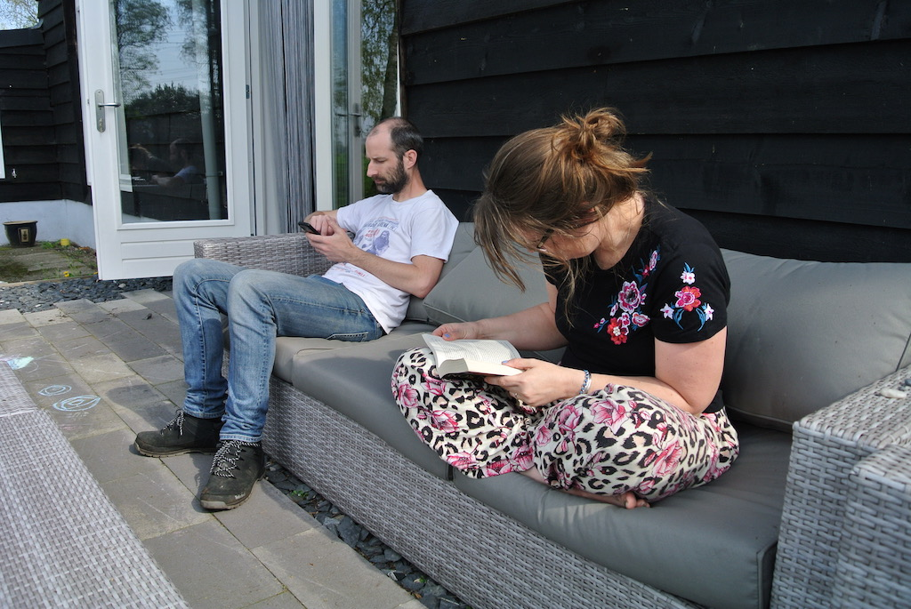
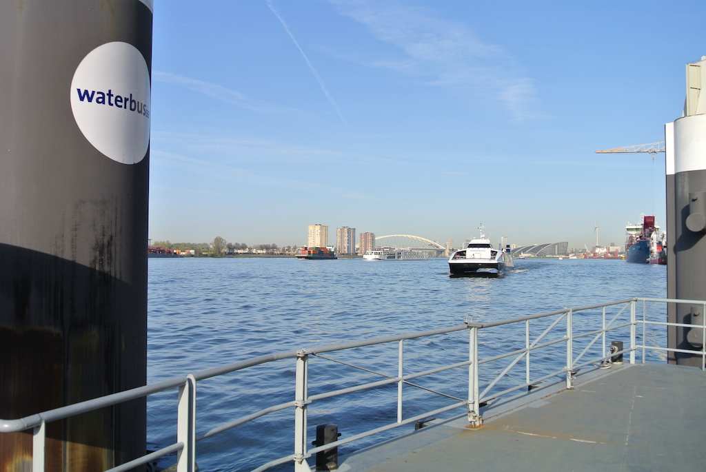
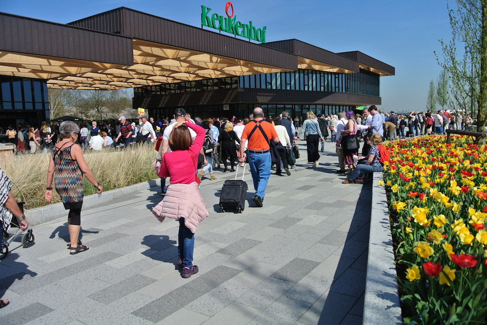
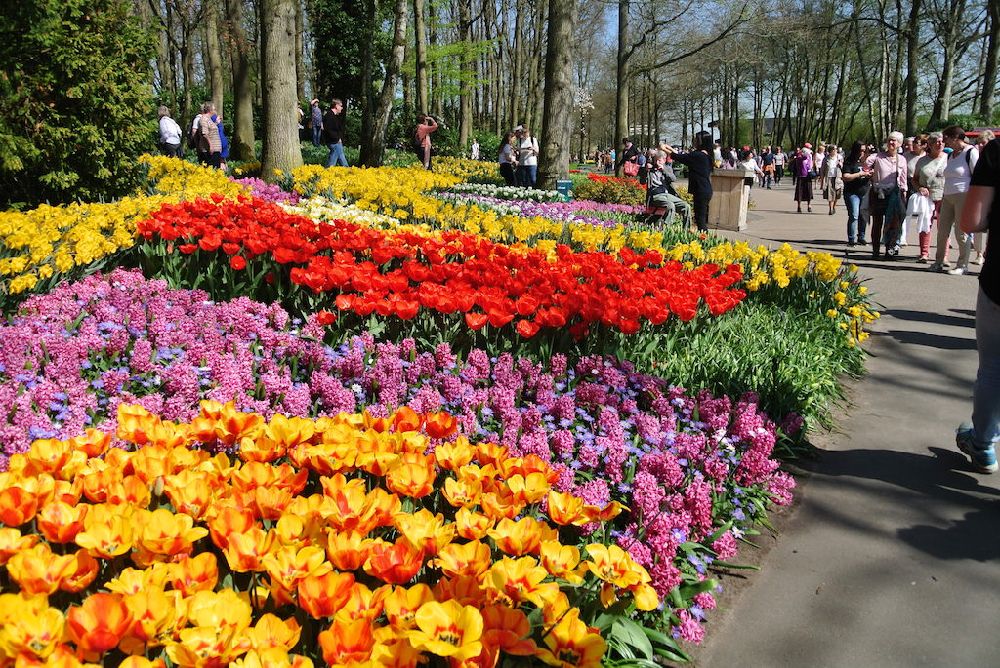
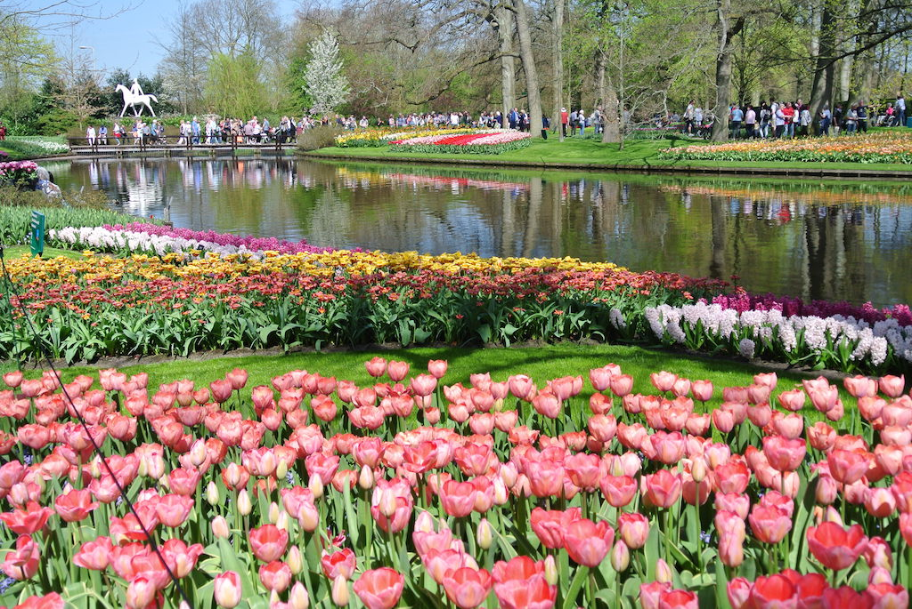
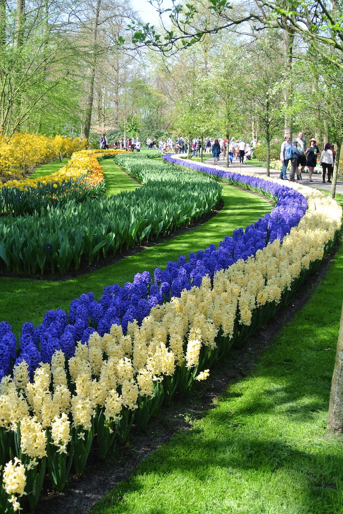
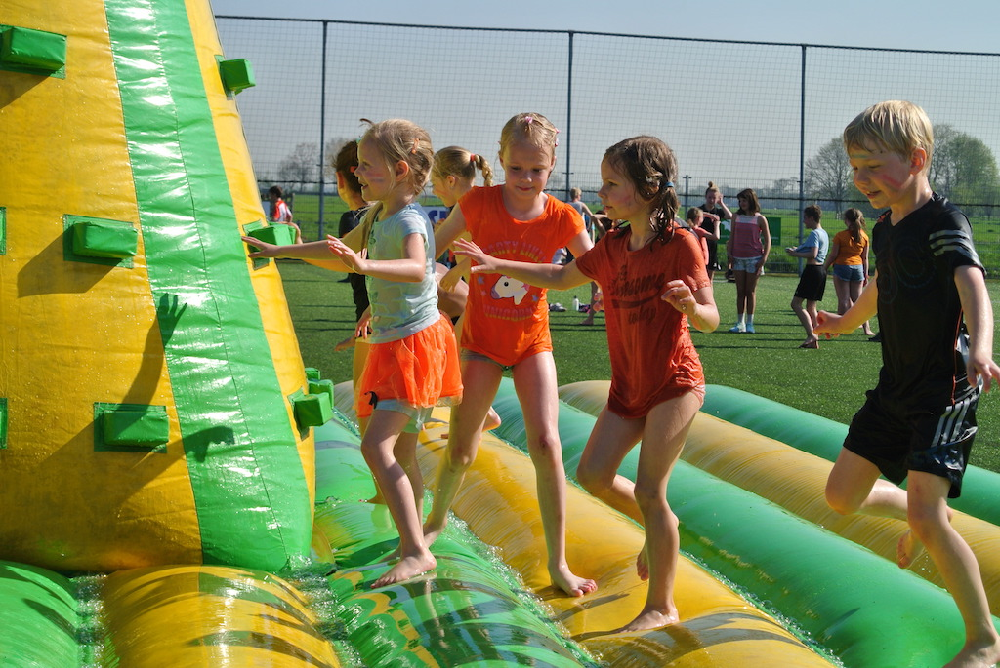
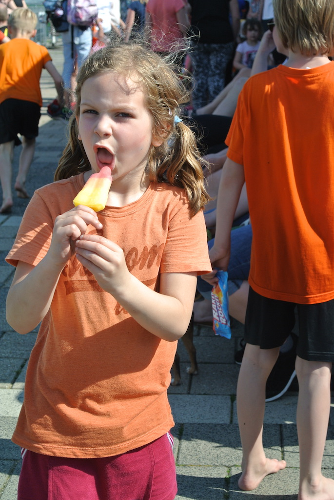
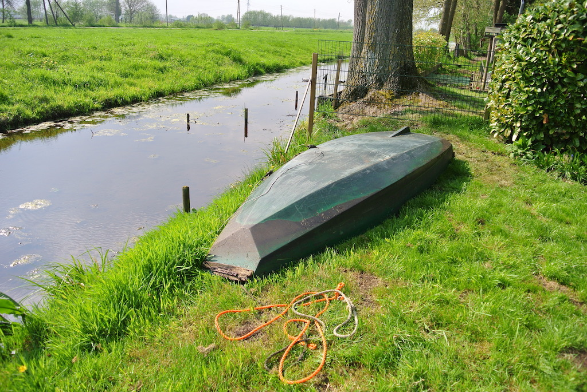

It seems strange to think that it is a year since we were last here, with Victoria, Brandon, Austin and Juniper. This visit, however, was also for a special occassion. During our visit Angela would be 70 and she had always wanted to go to the Keukenhof bulb gardens.
It was also the first time that we had tried travelling to Rotterdam by train. On Tuesday 17th April we had an early start with a drive to Ebbsfleet to catch the Eurostar. We were an hour early, but the train was on time. We were at Brussels before the Thalys train was allocated a platform, but we only had to wait 15 minutes. We arrived in Rotterdam on time and called Krista. They (Krista and Rowan) arrived at Capelsebrug just as we got off the Metro train. We left home at 8:12 and arrived at Akterbrouke ein at about 4:30 (local time). Paul got back from work just in time for dinner, which we ate outside.
Wednesday was a very busy day that started with us going with Krista to take Rowan to school. Krista then dropped us at the Krimpen aan den Ijssel jetty where we cought the waterbus into Rotterdam. There we picked up the coach that took us to Keukenhof. At The Hague they ran out of seats on the coach! So, eventually, two people went by taxi. However, we had a good day walking around the gardens in the sunshine.
   We caught a (slightly larger) coach back to Speido in Rotterdam, but the air conditioning was not working, so it was very hot. We had a good meal just by the coach stop before catching the waterbus back to Krimpen and being picked up by Paul.
Thursday was Angela's birthday. We had a slightly later start on what turned out to be a very hot and sunny day. We helped in the garden and I cycled to Rowan's school with Paul to collect her at lunch time and then again to collect her in the evening. Angela helped Krista to clear an area beyond the barns and I dismantled the frame around the sand pit. Later we all went to Lekkerkerk for dinner. We sat outside and had a good three-course meal.
Before lunch on Friday we went to Rowan's 'sports day' and watched the fun. It was another beutifully warm day. The children got very wet on the 'bouncy pyramid, but also enjoyed tennis, soccer, dance and dry skating. Then later in the afternoon we went to watch Rowan at her swimming lesson.
On Saturday Krista went off fairly early to do the supermarket shopping. Meanwhile Angela worked in the garden and I made a new handle for the tool that Angela put in the bonfire. Then I cleaned and greased the strimmer before cutting the grass along the drive. We had a barbeque for lunch and then went to Greet and Wim's for a snack tea. Sunday was another stay-at-home day. We mainly sat around until Paul, Krista and Rowan went off for lunch at a party for her cousin's birthday. We made our own lunch and played with Flo. When they got back we bailed out the boat and pulled it up on to the grass to dry out. Later we spoke with Victoria et al.
On Monday we were up reasonably early so that, after breakfast, Angela could go with Krista to take Rowan to school. We then packed and Krista took us to Capelsebrug so that we could take the Metro into Rotterdam. We met Paul outside his office. I thought he might show us where he worked, but we went back to the station to buy some lunch (for eating on the train) and then discovered that the Amsterdam to Paris Thalys train was delayed. Paul went back to work and we waited for the train, which was about half an hour late. So we, and a lot of other people, missed our Eurostar connection in Brussels. Unfortunately, the next train did not stop at Ebbsfleet, so we had to wait two hours in Brussels; coffee, walking around the station shops and sitting, before we could go into the Eurostar lounge. The journey was then fine and we got home just after 8 o'clock. In spite of the delay, going to Rotterdam by train worked out well.
© David James 2018 Last updated: 28th May 2018